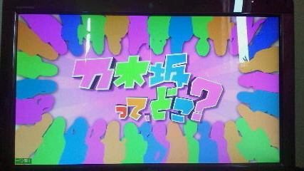

| 2012/04 06 Fri | ひめたん(* ゝω・*)ノ その124 |
前健ノーヒットノーラン＼(^O^)／☆
やっと本読みおわた。
だから読書感想文書こうとしたんだけど
間違えて携帯持ってしまったのでノリで日記書き上げちゃう☆
何で間違えたんだろう。
明らかに形違うやんけ!
超感動すること見つけた!
テレ東系番組が観れる乃木坂ふぁみりーのみなさんにはお馴染みの、
そしてテレ東京系が観れない乃木坂ふぁみりーさんには初めましてのこの画。

そう。
乃木どこ?
のオープニングでございます(^^)
録画してた画を一時停止してよくよく観察したわけですよ。
あんれ。
このシルエット、なんか見覚えある...。
そう!
なんとこれ、私たち
乃木坂46
のみんななんだよね。
え?あたりまえだって?
まあ確かに乃木メン以外の女の子のシルエットだったら逆にびっくりするけどさ。
このシルエットが私たちってことは、この中に私、
中元日芽香がいるの!
まあ確かにひめたんだけいなかったら逆にびっくりするけどさ。
ではみなさんに問題です。
ひめきゅん
には簡単だろうけどね?
はいハードル上げました(^ω^)ふふふ
ひめたんのシルエットは何色でしょう?
「○から何番目の●色」って答えてもいいよ(^^)わら
ヒントをあげるなら...
今のいっこ前の写真わかるかな。ピンクのブレザー。
うん、わからんよね＊
要するにツインではないよってことです。
 コメントするとき、1回でたくさん書くか、何回かにわけて少しずつ書くか
コメントするとき、1回でたくさん書くか、何回かにわけて少しずつ書くか
どっちがいいですか?
どっちも嬉しいけど、何回かにわけて少しずつ書くのが嬉しいかなっ
名前いっぱいみて、
あーまた来てくれたー(ω)にこり
ってしたいもんっ♪
どんな人とでも緊張したいで話せる方法は?
神様さま校長さまと言われたらひめたんも緊張しますけれどもー、
んんんとりあえず、とびっきりの笑顔と明るい声で
どんな相手さんでも心を開いてくれるんじゃあないかな。
あれー答えになってないような気がするのはなんでー('・ω・`)
毎日メールしてる男子が近くにいるとさりげドキドキしてる(笑)
これは恋ですかね!?w
それはねえ。
恋ですよ(*^^*)ぽ
んん羨ましいねえっ


 ひなちゃんって中2には見えないよね。きっと後数年したら
ひなちゃんって中2には見えないよね。きっと後数年したら
すごい美少女になると思うよ。ちはるんも。ひめたんもそう思わない?
同意。その通りですよ!
今すでに可愛いからうらやましいですね。本当に。
ひめたんなんて歳を重ねるごとに可愛さがなくなってくるよお(ノω;`)
自分で言ったのに悲しくなってきた。
うわー誰か助けてー!
まだ15歳なのにー!
料理が苦手だって言うけど上京して食事はどうするの?
ままと住んでるから、ままが作ってくれるの♪
だからいつまで経ってもお料理が上達したいのね。納得。
だめだこりゃ(^O^)☆
 料理は出来ないとね!まずは定番のロールキャベツとか作ってみませんか?
料理は出来ないとね!まずは定番のロールキャベツとか作ってみませんか?
ロールキャベツででびゅするの(ω)?
めちゃハードじゃん!
え簡単にできるもの??
服とか一人で買いにいきますか?
行かない!
行ったことないです本気で!
ままと行くか、ままとすずが行くか。
あんれ?なんでひめたんの服ななのに、ままとすずが買いに行くの?
そゆこともあるっ(*^^*)
朝コメントしても見ててくれてるよね(*'∀`*)?
もちろんもちろん♪
桜に関しての思い出ってある?桜系で好きな曲なにかな?
幼稚園から去年までずっと幼なじみのみんなでお花見してました(*'`*)
好きな桜ソングは、
SAKURA
/いきものがかりさん、
サクラサク
/北乃きいさんとか!
どっちもお別れソングだけどそんなことあ気にしない♪
というわけで、
明日は全握ですね!
ひめたんがみなさんに会えるのはもちょい先になりそうだな。
寂しいな...
('・ω・`)
んでもまずは明日の入学式がんばります◎←
中3ずのみんなー
頑張っておるかいな(ω)?
あっこの「中3ず」ってのはもちろん旧中3ず♪
心はいつまでも中学生なのです//
...それじゃあ新中3ずとかぶるじゃないかって?
いいの。あの子たちの方が大人っぽいんだからっ
(*´・ω・*)ひめたん
コメント(113)
2012/04/06 23:36